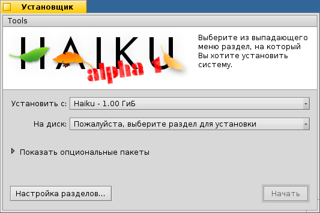

Русский
Русский Català
Català Deutsch
Deutsch English
English Español
Español Français
Français Italiano
Italiano Magyar
Magyar Polski
Polski Português
Português Português (Brazil)
Português (Brazil) Română
Română Slovenčina
Slovenčina Suomi
Suomi Svenska
Svenska 中文 ［中文］
中文 ［中文］ Українська
Українська 日本語
日本語 Установщик
Установщик
| Расположение в Deskbar: | ||
| Расположение в Tracker: | /boot/system/apps/Installer | |
| Настройки хранятся по адресу: | отсутствуют |
Установщик служит для установки Haiku на другой раздел.
После запуска отображается окно с важной информацией. Это не бессмысленное пользовательское соглашение (EULA), поэтому не стоит сразу же подтверждать соглашение, в нем говорится следующее:
Это приложение альфа-качества. Сделайте резервные копии, иначе поплатитесь!
Установщику потребуется заранее подготовленный раздел. Возможно, вам придется воспользоваться GParted LiveCD или чем-нибудь аналогичным. К счастью, приложение DriveSetup, входящее в состав Haiku по умолчанию, вполне справится с поставленной задачей.
- Haiku можно добавить вручную в загрузчик GRUB. Как это сделать, вы можете узнать в онлайн руководстве по установке.
Как только вы нажмете , то увидите следующее окно:
В первом выпадающем списке вам предлагают выбрать, откуда произвести установку. Источником установки может быть уже установленная Haiku. Также можно произвести установку с CD-диска, USB-диска и т.д.
Во втором выпадающем списке вам следует указать, куда произвести установку. Этот раздел нужно подготовить заранее, используя утилиту типа GParted.
Щелкнув по пункту Показать опциональные пакеты, вы увидите список дополнительных пакетов, которые можно установить вместе с Haiku, если таковые, конечно, имеются.
Перед началом установки следует проверить, правильный ли вы указали раздел для установки. Щелкните по кнопке , чтобы открыть приложение Разметка диска и удостоверьтесь в правильности выбора.
Кнопка запустит процесс установки, который скопирует папки /home и /system на выбранный раздел и пометит его как загрузочный.
 Инструменты
Инструменты
По окончании установки раздел автоматически помечается как загрузочный. Однако иногда случается, что другие операционные системы или программы для работы с разделами случайно переписывают загрузочный сектор вашего раздела с Haiku. В этом случае загрузите установочный CD-диск и запустите установщик. Выберите ваш раздел с Haiku в выпадающем списке и выберите подменю из меню Инструменты. Это снова сделает ваш раздел загрузочным.
Еще одним пунктом меню является , позволяющий добавить меню выбора операционной системы на загрузочный сектор.
Однако его запуск не будет необходимым, если вы уже используете загрузочный менеджер, подобный Grub (в этом случае, вы сможете добавить Haiku в список загрузки вручную, как описано выше), или же если Haiku будет единственной операционной системой на вашем компьютере.